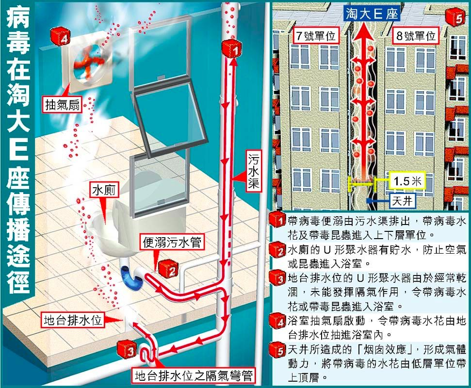

抗疫一线：他在武汉做检验
原文链接 备份链接 刘为勇是我的大学同学。如今他是华中科技大学同济医学院附属同济医院检验科一员，发生疫情以来，他一直在抗击新冠病毒的第一线。 他是新冠病毒的最早鉴定者之一。在 1 月 4 日，他就在大学群里提醒大家不要去菜市场买野味，因为 …


1月31日，《新英格兰医学杂志》报道中提到，在美国首例确诊患者的粪便样本中发现病毒。2月1日，深圳市第三人民医院也有类似发现。
这让人联想到2003年的SARS疫情，香港淘大花园300多个病例，就是被粪便传播感染。
香港特区卫生部门经过调查发现，帮助病毒传播的真凶，是藏在卫生间地漏下，毫不起眼的U形存水弯。


△ 图片来源：yestone
2003年3月22日，位于香港九龙区的淘大花园出现了一例SARS患者。
这原本并不是什么大新闻，因为当时的香港已经有100多人感染SARS。但在此后的十多天里，SARS疫情在这个大型住宅区里像着魔一样蔓延开来。从3月22日到4月15日，淘大花园总共出现321个病例（最后死亡42人），成为全球范围内短时爆发SARS疫情最集中的重灾区。
这些病人普遍出现腹泻、发烧和呼吸困难的症状，有人在送进医院不久后便不治身亡。更让人不安的是，根据香港特区卫生署对这些病人的问卷调查，他们中只有4%的人接触过SARS患者，和当时公认的SARS病毒通过近距离飞沫传播的特征不符。
这意味着，在淘大花园潜伏着一种不为人知的传播机制，SARS病毒可以通行无阻。一时间，淘大花园“毒楼”的名号不胫而走。
为了阻止疫情扩散，香港特区破天荒地发布了隔离令，共涉及200多户居民。而转机也恰好在此时出现，在排除了电梯、饮用水污染等因素外，调查组把目光锁定在了大楼的污水处理系统。
后来的调查证明，病毒确实藏身在污水里。它通过感染者的粪便进入污水管道，再通过其他住户干涸已久的地漏进入卫生间，附着在毛巾、地毯以及各种浴室设备的表面，最终引发人体感染，构成了“粪便传播”的全链条。
17年后，与SARS冠状病毒同属一个家族的新型冠状病毒来袭，又呈现出类似的传播特征。近日，钟南山院士表示，由于已经在患者粪便中发现了新型冠状病毒，所以不能排除新冠病毒通过粪便传播的可能性。
淘大花园里的SARS疑案
2003年3月22日，香港威尔斯亲王医院收治了一名33岁的男性患者A，他患有慢性肾病，曾是医院的常客。但这一次，他不仅发烧腹泻，还伴随严重的呼吸障碍。
A的病情引起了医院的高度重视。半个月前，威尔斯亲王医院确诊了香港首例SARS患者，并造成数十名医护人员感染，A的症状和他们几乎完全一样。
出于谨慎考虑，医院在对A进行救治的同时，询问了他过去几天的行踪。据称，A曾在3月14日和3月19日两天，到过其弟弟位于淘大花园E座的家中，并且两次都使用了卫生间的抽水马桶。

△ 图片来源：yestone
两天后，A的弟弟和弟媳因为相同症状入住了香港基督教联合医院，很快被确诊为SARS。此后两天，淘大花园陆续出现SARS病例，截至3月26日，共有15名患者入院，来自7个家庭，多数居住在E楼的7号和8号单元。
这一现象立即引起了香港特区卫生福利及食物局的注意。在3月26日的例行会议上，时任局长杨永强要求立即对淘大花园疫情展开调查。
淘大花园是一个由19幢大楼簇拥组成的大型住宅区，共有住宅4896套，人口稠密。其中，E楼为36层楼，每层8个单元，呈井字形分布，每个单元约为48平米。A的弟弟就住在这幢楼的16层7号单元。
3月26日下午，香港卫生署九龙区办事处的工作人员到淘大花园E座实地考察，他们到了出现病例的7个楼层，向20户居民进行查问。起初，他们判断病毒来自电梯或大堂等公共空间。这个想法很快就被推翻，因为大楼的清洁工每晚都要乘坐电梯收集垃圾，但没有被感染。
连日调查只得出一个结论，淘大花园的感染源头就在E座，因为这里的病例出现得最早，数量也最多，占到了整个小区的4成以上。
调查没有进展，疫情却在加速扩散。截至3月30日，淘大花园的感染人数已经上升到了190人，其中E座93人。这一天的例会上，杨永强向当时的特区行政长官董建华提出了隔离E座的方案，董建华表示同意，并把这个任务指派给了时任卫生署长陈冯富珍。
后来的公开资料显示，陈冯富珍对隔离方案有所保留，包括她在内的众多卫生署人士认为，一旦发出隔离令，香港将面临巨大舆论压力。但事态的恶化没有给她犹豫的时间。3月31日早晨6点，陈冯富珍代表香港卫生署对淘大花园E座发出为期10天的隔离令。隔离期间，除非有官方的书面文件，任何人不能出入大楼。
这是自上世纪60年代霍乱疫情以来，香港首次发布隔离令。
就在这时，一个不经意的发现让形势出现了转机。4月1日，隔离令生效的第二天，时任香港环境运输及工务局局长廖秀冬在勘察E座时发现，大楼的污水管道和部分住户的卫生间存在气体流通，她将这一发现告知了杨永强。
杨永强立刻感到事态不同寻常，因为他在前几天刚刚得知，部分患者的粪便样本中携带SARS病毒。他们开始怀疑污水排放系统是导致SARS在E座垂直楼层传播的原因。出于安全考虑，他们连夜撤走了E楼的200多户居民，将他们送去远离市区的度假村定点隔离。另一方面，廖秀冬牵头成立了专职小组，对E座的污水排放系统展开详细调查。
四天后，廖秀冬以技术报告的形式提交了初步调查结果，解释了受污染的水如何产生液滴，这些液滴又是如何通过卫生间干涸的地漏进入其它住户家中。
至此，悬置半个月之久的淘大花园SARS疑案终于告破。香港特区政府在4月17日公布了调查报告——真凶是藏在卫生间地漏下，毫不起眼的U形存水弯。
致命的U型存水弯
U型存水弯是建筑中非常常见的一种管件，作用是隔绝下水道的空气，防止臭气进入室内。
淘大花园E座，在建筑设计上有8个垂直的污水管，每条管道都收集来自同一单元各楼层的污水。这些污水分别来自抽水马桶、洗手池和浴室的地漏，这3个卫生设备上都安装了U型存水弯，只有当存水弯里有足够的水量时，才能够发挥隔离作用。
根据对E楼住户的调查，多数居民都提到了卫生间臭味明显的现象，反映出上述的3个存水弯里，至少有1个存在问题。抽水马桶、洗手盆都是常用的，这2个存水弯应该长期留有积水，所以问题大概率是出在浴室地面的地漏上。
根据卫生署工作人员的入户调查，淘大花园的大部分住户都习惯于拿拖把拖地，而不是拿水冲洗，这就容易导致地漏下的U型存水弯存不下水，起不到隔离污水管臭味的作用。
SARS疫情爆发后，香港大学的科学家曾在淘大花园E座某一单元里做了一次实验。当打开浴室的排风扇时，浴室内气压为负，污水管里的空气可以通过地漏被吸入到浴室。如果污水管里的空气中含有病毒，那么这条路线就成了病毒传播最隐蔽的途径，这也能够解释为什么淘大花园的传染病例大多集中在垂直方向上的7号和8号单元。
但另一方面，污水管的水流是往下走的，按着这个规律，病毒传播也应该往下。以16楼的首个患者为例，他不可能通过上述途径感染到16楼以上的住户，真实的情况却是，不管是7号单元还是8号单元，集中感染的楼层都为13楼到24楼之间，这说明病毒还有向上的渠道。
针对这一问题的解释，4月17日香港特区发布的调查结果中并没有提及，但一个月后世界卫生组织的调查报告作了补充。
报告指出，当浴室抽气扇开动时，可能会将从污水管抽出的病毒带到天井，令受污染的空气通过打开的窗户，进入相隔数层的住户。

△ 资料图
淘大花园的建筑构造也助推了这种传播。例如，在E座7号和8号单元之间，是一个宽度为1.5米的狭窄天井。根据空气动力学，狭窄天井内的空气很难横向流动，但能够快速上下流动。一旦带有病毒的气体在抽气扇的作用下逸出室外，它就可以在这个狭长的空间里通行无阻，这就为病毒向上播散提供了可能。
向下靠地漏，向上靠天井，这就是淘大花园SARS病毒快速扩散的真相。
新冠病毒可能通过粪便传播
无独有偶，17年后，新冠病毒能够通过粪便传播的概率正在加大。
1月31日，权威医学期刊《新英格兰医学杂志》报道，美国首例确诊新型冠状病毒肺炎患者成功治愈，其中提到了在患者发病第7日采集的粪便样本中发现了病毒。
2月1日，深圳市第三人民医院肝病研究所也有了类似发现，他们在当地某些新冠肺炎确诊患者粪便中，检测出新型冠状病毒核酸呈阳性。
香港大学医学院微生物系教授张其威此前接受《新京报》采访时表示，目前还没有在粪便上检测到活病毒，但是参考淘大花园事件，他认为，粪便中含有活冠状病毒的概率非常高，粪便传播的途径清晰存在。
“至少会有两种方式。一种是粪便沾到了裤子的某个部位，然后手碰到了这个部位，再碰到鼻子或者嘴巴，人就会传染病毒。第二种是感染者上完厕所冲马桶时，冲马桶的水一般有较大的冲击力，把粪便中的病毒挥发到空气中。如果厕所是封闭的，有人正好在边上，就有可能通过呼吸被感染。”
张其威表示，虽然从真实生活来看，这两种途径的可能性都不高，但依然不能轻视，尤其是要注意公共厕所，它符合第二种方式，是非常高危的传播源。
好消息是，截至目前，还没有发现类似淘大花园这样的传播案例。
在此前公布的全国确诊新冠病例中，深圳和内蒙古先后出现了两例楼上楼下邻居传染患病的情况，但都基本排除了通过污水系统发生粪便传播的可能。经过流行病学调查，深圳的感染病例最大可能是因为同乘一部电梯。而在内蒙古的个案中，被感染者白某住在确诊患者宋某楼上，两人虽然没有直接接触，但有共同接触者，且同样已被确诊。
17年前，淘大花园用极其惨重的代价，证明了SARS病毒可以通过粪便传播。回望过去，希望历史不再重演。
【参考资料】
香港淘大花园非典传染原因的再探讨，《水务世界》
香港特区《立法会调查政府与医院管理局对严重急性呼吸系统综合症爆发的处理手法专责委员会报告》
新冠病毒患者粪便测出核酸阳性，意味着什么？ 新京报网
毛晓琼|撰稿
刘冉|责编


我们尊重原创版权，未经允许请勿转载。
授权转载
郑琪 微信号: 1281949389
商务合作
上海：leslee 13916263824
北京：Jessie 13911125922
线索爆料、意见反馈，加入核心读者社群
请扫码联系健闻君

让朋友们看到你也在看
↓↓↓
长按二维码向我转账
受苹果公司新规定影响，微信 iOS 版的赞赏功能被关闭，可通过二维码转账支持公众号。
原文链接 备份链接 刘为勇是我的大学同学。如今他是华中科技大学同济医学院附属同济医院检验科一员，发生疫情以来，他一直在抗击新冠病毒的第一线。 他是新冠病毒的最早鉴定者之一。在 1 月 4 日，他就在大学群里提醒大家不要去菜市场买野味，因为 …
原文链接 备份链接 【财新网】（记者 杨睿 冯禹丁 赵今朝）“阴谋论者不相信科学。我希望国家专业部门来调查，给我们一个清白。”中国科学院武汉病毒研究所研究员石正丽2月4日回复财新记者称，“我自己的话没有说服力，我不能控制别人的思想和言 …
原文链接 备份链接 从2003年抗击SARS疫情起，每逢新的疫病出现，香港人总会联想到“淘大花园”，这座被符号化的楼盘牵涉的社会现实，对于理解当下香港特区防疫体系的压力仍有意义 2月初，食物环境卫生署开始在香港大街小巷挂出相关宣传标语。 …
原文链接 备份链接 “从严格意义上说，病毒不能算是活着。病毒非生非死，存在于生命与非生命的边界之上。若是处于细胞外，病毒只是存在而已，什么也不会发生。一旦病毒进入细胞，就变成了‘特洛伊木马’。病毒在繁殖时看起来是活着的，但从另外一个角度 …
原文链接 备份链接 作者 | 李越 编辑 | 康晓 出品｜深网·腾讯小满工作室 欢迎下载腾讯新闻APP，阅读更多优质资讯 扎伊尔扬布库村，中非尚存的一片很原始的土地。 1976年9月中旬，这里的一间小教会医院接纳了几十例相同病例，他们身体 …